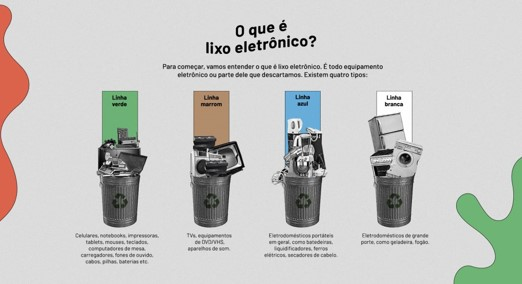

Evolução Histórica da Educação Ambiental a Nível Global

Autor(es): Azevedo, Maria Antonia & Xavier, Amanda & Carrasco, Ligia (2020).
A trajetória da Educação Ambiental é marcada por marcos históricos que refletem sua evolução global ao longo das décadas. Como mencionado por Genebaldo F. Dias em suas obras, essa jornada tem sido influenciada por eventos significativos que moldaram a agenda ambiental internacional, Dias (2006); Dias (2004). Desde os primeiros esforços de conscientização até a incorporação da educação ambiental em políticas e práticas globais, cada momento representa um avanço na compreensão e no engajamento com questões ambientais. A importância desses marcos históricos reside não apenas em seu impacto imediato, mas também em seu legado contínuo na forma como abordamos e lidamos com desafios ambientais em escala mundial. Ao reconhecer e aprender com esses marcos, podemos fortalecer ainda mais os esforços para promover uma consciência ecológica e ações sustentáveis em todo o mundo.
Políticas Nacionais para a Promoção da Educação Ambiental
Outra legislação de suma importância é a Lei n° 9795, de 1999, que institui a Política Nacional de Educação Ambiental. Esta lei, conforme destacado pelo Brasil (1999), estabelece os fundamentos para a promoção da educação ambiental em todas as esferas educacionais, com o objetivo de sensibilizar a sociedade para a preservação do meio ambiente. Ao definir diretrizes para a inclusão da educação ambiental nos diversos níveis de ensino, essa legislação reconhece a importância do conhecimento e da conscientização ambiental na construção de uma sociedade mais sustentável. Por meio de programas educacionais e atividades pedagógicas, busca-se disseminar valores e práticas que contribuam para a conservação dos recursos naturais e a promoção do desenvolvimento sustentável. Assim, a Lei n° 9795/1999 desempenha um papel fundamental na formação de cidadãos conscientes e engajados na proteção do meio ambiente.
Integração de Disciplinas na Prática da Educação Ambienta
Na busca pela excelência na Educação Ambiental, Genebaldo F. Dias ressalta a vitalidade de estratégias interdisciplinares e alicerces sólidos para sua aplicação prática, como delineado em suas obras de referência sobre o assunto, Dias (2006); Dias (2004). Ao explorar a intersecção entre diversas disciplinas, torna-se possível construir uma compreensão mais abrangente e holística das questões ambientais, preparando os educadores e os aprendizes para enfrentar os desafios do mundo contemporâneo. A abordagem interdisciplinar fomenta a sinergia entre diferentes áreas do conhecimento, promovendo uma visão integrada e interconectada dos problemas ambientais e suas soluções. Dessa forma, a obra de Genebaldo F. Dias oferece não apenas um guia, mas também um convite à reflexão e à ação, inspirando uma educação ambiental que transcende fronteiras disciplinares e incentiva a colaboração e a inovação. Em um mundo em constante transformação, a interdisciplinaridade emerge como uma ferramenta essencial para construir um futuro sustentável e equitativo para as gerações presentes e futuras.
Estratégias Educacionais para a Promoção da Gestão Sustentável de Resíduos
A coleta seletiva emerge como uma ferramenta vital na construção de uma consciência ambiental desde tenra idade, conforme sublinhado por Rozeli A. Z. Felix em sua obra seminal, Felix (2007). No âmbito escolar, essa prática transcende o simples ato de separar resíduos; torna-se um veículo poderoso para inculcar valores de responsabilidade ambiental e sustentabilidade. Ao adotar a coleta seletiva, as instituições de ensino não apenas mitigam impactos negativos no meio ambiente, mas também cultivam uma geração de cidadãos conscientes. Através da participação ativa nesse processo, os alunos internalizam a importância da preservação dos recursos naturais e desenvolvem habilidades práticas para promover a sustentabilidade em suas comunidades. Sob a orientação adequada, a coleta seletiva não apenas reduz a quantidade de resíduos destinados a aterros sanitários, mas também alimenta um ciclo virtuoso de conscientização e ação. Ao reconhecer a obra de Felix (2007), destacamos a necessidade premente de integrar a educação ambiental de maneira holística, onde a prática da coleta seletiva serve como um pilar fundamental na construção de um futuro mais sustentável.
Educação Ambiental e a Conscientização sobre o Uso Responsável de Pilhas e Baterias
No artigo "Educação Ambiental no uso e descarte de pilhas e baterias", de Zélio R. Brum e Djalma D. da Silveira (2011), publicado na Revista Eletrônica em Gestão, Educação e Tecnologia Ambiental, destaca-se a importância crucial da educação ambiental na promoção de práticas sustentáveis relacionadas ao uso e descarte de pilhas e baterias.
Os autores ressaltam a necessidade premente de conscientizar a população sobre os impactos ambientais adversos decorrentes da disposição inadequada desses resíduos, que frequentemente contêm substâncias tóxicas e metais pesados. Nesse contexto, estratégias educativas são essenciais para sensibilizar os indivíduos sobre os riscos ambientais e de saúde associados à poluição gerada pelo descarte incorreto de pilhas e baterias.
Brum e Silveira (2011) exploram, de forma interdisciplinar, diversas abordagens educativas destinadas a promover uma mudança de comportamento em relação ao consumo e ao descarte de pilhas e baterias. Além disso, discutem-se iniciativas de reciclagem e programas de coleta seletiva como medidas eficazes para reduzir os impactos negativos sobre o meio ambiente.
Ao analisar a intersecção entre educação ambiental e gestão de resíduos, o artigo oferece insights valiosos para o desenvolvimento de políticas e estratégias que visam a promoção de uma cultura de consumo consciente e a preservação ambiental. A conscientização e a educação são ferramentas fundamentais para enfrentar os desafios ambientais e promover um futuro mais sustentável para as próximas gerações.
A prática da obsolescência programada tem sido um tópico de considerável interesse e preocupação, especialmente quando examinada à luz de seus efeitos ambientais. Rossini e Naspolini (2017) oferecem uma análise profunda dessa questão em seu artigo "Obsolescência programada e meio ambiente: a geração de resíduos de equipamentos eletrônicos", publicado na Revista de Direito e Sustentabilidade.
Ao longo de sua pesquisa, os autores exploram os desafios ambientais decorrentes da obsolescência programada, com um foco específico na produção crescente de resíduos de equipamentos eletrônicos. Eles destacam como a rápida obsolescência dos dispositivos eletrônicos contribui significativamente para o aumento do lixo eletrônico, representando uma séria ameaça para a sustentabilidade ambiental.
Rossini e Naspolini (2017) também examinam os aspectos legais e regulatórios relacionados à obsolescência programada e seu impacto no meio ambiente. Eles argumentam que é necessário um quadro regulatório mais robusto para lidar com esse problema, bem como uma abordagem mais abrangente que promova a reutilização, reciclagem e descarte adequado dos resíduos eletrônicos.
Além disso, os autores destacam a importância da responsabilidade corporativa na mitigação dos impactos ambientais da obsolescência programada. Eles enfatizam a necessidade de uma mudança de paradigma, onde as empresas priorizem a longevidade e a reparabilidade dos produtos em vez da obsolescência planejada, contribuindo assim para a preservação dos recursos naturais e a proteção do meio ambiente.
Em resumo, o estudo de Rossini e Naspolini oferece uma análise abrangente e perspicaz dos desafios enfrentados pela sociedade em relação à obsolescência programada e seus efeitos sobre o meio ambiente. Ao destacar a importância da conscientização, regulação eficaz e responsabilidade corporativa, os autores fornecem insights valiosos para abordar esse problema complexo e urgentemente relevante.
A Importância da Educação Ambiental na Promoção do Descarte Responsável de Pilhas e Baterias

Autor(es): Cezar, Elaine (2019).
"A conscientização e a educação são passos fundamentais para construirmos uma sociedade mais sustentável e responsável com o meio ambiente" (Oliveira, Rocha & Lima, 2016, p. 87). Essa frase ecoa a essência do que acredito ser importante na nossa jornada em prol do planeta.
Refletindo sobre um estudo recente conduzido por Oliveira, Rocha e Lima (2016), intitulado "Educação ambiental e descarte correto de pilhas e baterias: uma análise em escolas públicas de Campina Grande, Paraíba", percebo o quão vital é abordarmos questões como o descarte adequado de pilhas e baterias desde cedo.
Esse estudo vai além de apontar problemas; ele nos convida a pensar em soluções práticas. Eles destacam a urgência de educar os jovens sobre os impactos ambientais do descarte inadequado desses resíduos e de incentivar práticas responsáveis de disposição de resíduos eletrônicos.
É inspirador ver como a educação ambiental pode moldar não apenas mentes, mas também corações. Ao integrarmos essa educação em nossas escolas, estamos não só informando, mas também inspirando os jovens a se tornarem cidadãos mais conscientes e comprometidos com o cuidado do nosso planeta.
Um Alerta para o Nosso Meio Ambiente

Autor(es): Moraes, Fernanda S., Eberlin, Samara (2015).
O estudo realizado por Santos e Pereira (2017) investigou como o descarte errado de pilhas e baterias em Itajaí (SC) afeta o meio ambiente. Eles descobriram que quando jogamos pilhas e baterias fora de forma incorreta, isso pode causar grandes problemas para a natureza.
Os pesquisadores encontraram metais pesados, como mercúrio, chumbo e cádmio, dentro dessas pilhas e baterias. Esses metais são muito perigosos para os animais e plantas que vivem perto de onde elas são descartadas. Eles podem contaminar a água e o solo, o que não é bom para nós e para os bichinhos que vivem lá (Santos & Pereira, 2017).
Além disso, quando queimamos ou enterramos pilhas e baterias de qualquer jeito, elas soltam coisas ruins no ar. Isso pode fazer mal para as pessoas e também para o ar que respiramos (Santos & Pereira, 2017).
Por isso, Santos e Pereira (2017) falam que é muito importante ensinar todo mundo a jogar esses materiais fora do jeito certo. Eles dizem que precisamos aprender mais sobre como cuidar do nosso planeta e evitar fazer coisas que podem prejudicar ele.
Em resumo, o estudo mostra que é muito urgente tomar medidas para evitar que o descarte de pilhas e baterias cause problemas graves para o meio ambiente e para nós mesmos.
O Papel Fundamental da Educação Ambiental na Gestão de Resíduos Sólidos

Autor(es):Magrini, Alessandra (2014).
Sabemos o quanto é importante cuidar do nosso planeta e isso inclui saber o que fazer com nossos resíduos, especialmente aquelas coisinhas pequenas, mas perigosas, como pilhas e baterias. Em um estudo feito por Toccheto, Marconato e Marconato (2017), eles ressaltam algo que realmente nos faz pensar: "É imperativo que as pessoas entendam por que é tão importante descartar pilhas e baterias corretamente. Elas podem ser pequenas, mas contêm substâncias que podem fazer um grande mal para a saúde humana e o meio ambiente se forem jogadas fora de qualquer jeito." (p. 452).
Eles também destacam algo crucial: não basta apenas separar o lixo, precisamos saber o que acontece depois. Eles dizem:"A gente não pode parar só na separação dos resíduos, é fundamental entender como o nosso descarte afeta o mundo ao nosso redor. Precisamos pensar em reciclar, reutilizar e até buscar alternativas mais amigáveis com o meio ambiente." (Toccheto et al., 2017, p. 455).
E adivinha quem tem um papel super importante nessa história? A escola! Os autores enfatizam que:"É essencial que a escola aborde o assunto dos resíduos sólidos de uma maneira que faça a gente realmente pensar. As atividades e discussões em sala de aula podem ajudar a formar cidadãos conscientes e responsáveis, prontos para cuidar do planeta." (Toccheto et al., 2017, p. 458).
Então, fica claro que a educação ambiental é como uma super-heroína na luta pela preservação do nosso lar. Ela nos ajuda a entender melhor como nossas ações afetam o meio ambiente e nos motiva a fazer escolhas mais sustentáveis.